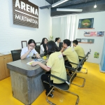
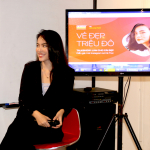

WELCOME TRƯỜNG CAO ĐẲNG QUỐC TẾ KENT

Talkshow: Nghề Thiết kế có cần Sáng tạo?
Chắc chắn rồi! Không những vậy, sáng tạo còn là yếu tố vô cùng quan trọng trong thiết kế. Bởi vậy, nhiều bạn trẻ dù yêu thích Thiết kế và Mỹ thuật Đa phương tiện nhưng lại nghi ngại về năng lực bản thân, tự hỏi liệu mình có thể theo đuổi ngành học đầy tiềm năng này không? Hãy đến với buổi Talkshow để giải tỏa những băn khoăn của bạn nhé!

Arena Open Day 2019: VẺ ĐẸP TRIỆU ĐÔ – Triệu bất ngờ, triệu niềm vui
Chất chơi, phá cách, xịn xò, độc đáo và chỉn chu,… là những từ ngữ mà các bạn trẻ tham gia “Arena Open Day 2019: VẺ ĐẸP TRIỆU ĐÔ” đã đùng để nói về ngày hội trải nghiệm Mỹ thuật Đa phương tiện sau hơn 5 tiếng khám phá và tham gia các hoạt động ở đây. Có thể nói tất cả các thành viên tham dự đã có “triệu bất ngờ, triệu niềm vui” trong ngày hội này.
Tin Kent--------------
Ngành học Mỹ thuật Đa phương tiện - Cơ hội “vàng” của thế hệ Z (17/04)
Nhóm học viên Arena và giải thưởng Best Animation trên đấu trường Quốc tế (17/04)
Triển vọng của Multimedia qua góc nhìn của Hot Instagrammer – Lê Hà Trúc (14/04)
Hiểu về Minh họa qua những chia sẻ từ tác giả “Lựa Chọn” – Hoàng Giang (10/04)
Điểm lại một số khoảnh khắc "nổi bật" tại sự kiện Vẻ đẹp triệu đô (07.04.2019) (07/04)